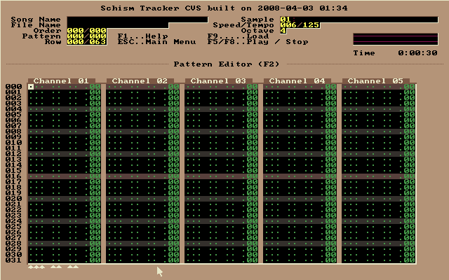
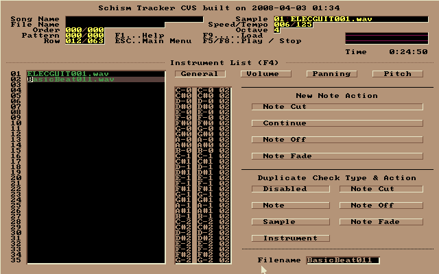
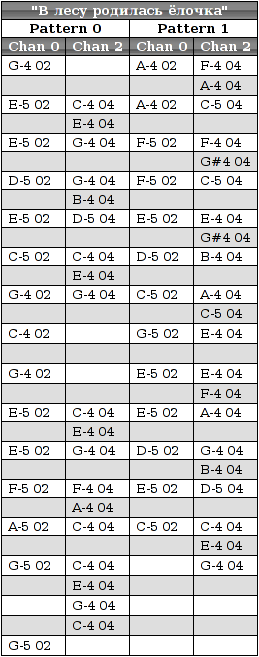

Introduction to the Schism Tracker
Schism Tracker is a free reimplementation of Impulse Tracker, a program used to create high quality music without the requirements of specialized, expensive equipment, and with a unique "finger feel" that is difficult to replicate in-part. The player is based on the Modplug engine, with a number of changes to improve IT playback.
Where Impulse Tracker was limited to i386-based systems running MS-DOS, Schism Tracker runs on almost any platform that SDL supports, and has been successfully built on Linux, Mac OS X, Windows, FreeBSD, AmigaOS, and BeOS.
So, Schism Tracker will show to you such window at first run:

This window is unclear for Beginners: program ostensibly offers load the file, although you want to create a new. In fact, the new empty project is already open.
It is a very important detail that makes navigation in the editor convenient - all the windows needed to work, caused by using the function keys 'F1' - 'F12'. 
For example, you can call the patterns editor by pressing 'F2' key - notably in this the musician spends most of his time. Since the project is empty,patterns editor doesn't have any data yet. For example, if you press the 'Q' key, then the editor added "C-5 01". That means roughly as follows: play an instrument No. 1 note with the parameters "C-5".
But when you try to play the melody, no sound will be, because there is no instrument. The tracker is simply does not know how to play this note. The instrument is tentatively need to create.
Sample - a small piece of digital instrument, voice or other sound effects. Most tracker allows looping of the sample, simulating a note by an extended sound. To view a list of samples in Schism Tracker use the 'F3' key:

Schism Tracker have not a library of samples or instruments. Create them in Schism Tracker also impossible. We need to import already finished, such as WAV-Files. They are easily searched in the search engines for "music samples download". Or you can take samples of any tracker with its library of samples. For example, MadTracker. A set of simple samples from MadTracker can take here.
 By default, all samples are inactive, and the "play" button is dark red. To load a sample from the file you just need to press the 'Enter' and select the file.
By default, all samples are inactive, and the "play" button is dark red. To load a sample from the file you just need to press the 'Enter' and select the file.
When you add a sample Schism Tracker automatically ask whether to create an instrument that matches this sample. You need to answer affirmatively.
After adding a sample to instrument list ('F4'), this list look something like this: 
Now you can begin to write the melody itself. It is the patterns editor ('F2').

Notes recruited at the main keyboard. Try and understand everything!  Indeed, the uniqueness of the proposed sponsored tracker technique is that with it you can make your songs, just listening as the sounds of a instrument, and choose the appropriate sound.
Indeed, the uniqueness of the proposed sponsored tracker technique is that with it you can make your songs, just listening as the sounds of a instrument, and choose the appropriate sound.
For example, a Russian national song "In the forest was born herringbone" for Schism Tracker might look something like this: 
When you work on the melody used large quantities hotkeys. The combination of 'Ctrl' + 'BackSpace' discard all changes in the composition (feature total undo), 'Alt' + 'BackSpace' Undo the last change (function undo), and when you click '+' or '-' will change the current pattern. If you want to replace the wrong note - just hover your cursor on it and enter the correct note. The current cursor position should be cleaned using '.'. 'Del' is not only atonement for the current position, but also raise all the values on one line up. Editor's options can be accessed by pressing 'F2', a pattern options - 'Ctrl' + 'F2'. Play this pattern may be using key 'F6'.

The track can be saved by the main menu ('Esc'), it choose 'File menu' - 'Save current'. Or you can just press 'F10'. This will open a window similar to the one we saw at startup:

Here, you will need to enter a file name, select its type (Schism can do type selection automatically).
Then you can select song variables: the title, the playback speed, tempo and stuff. Call window of song variables can be by key 'F12':

But even after the current action, our work does not want to play on the key 'F5'. This is because the composition may consist of several patterns and tracker should know in what order they play. Set the order could be on the list of planning ('F11').

By the way, to save the current progress you can use a standard hotkey 'Ctrl' + 'S'. Save often!
So now any player can play your song. Schism Tracker will also be able to reproduce it in full length:

Download in PDF format (291.5 kB)